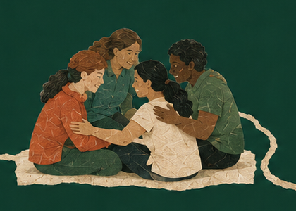
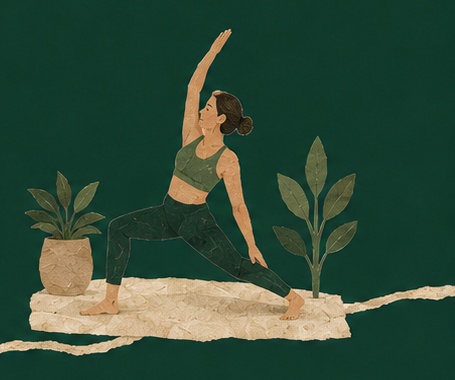
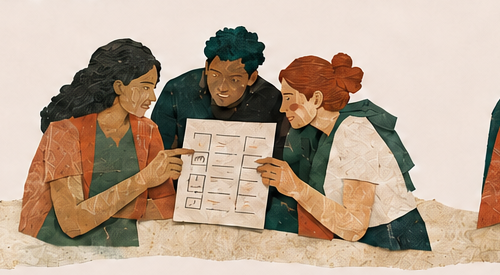
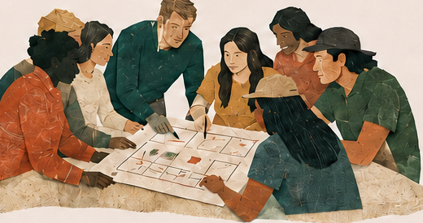
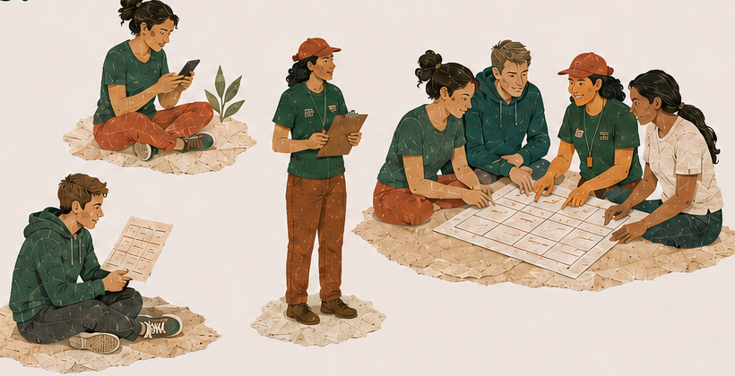

Decí qué te sirve
Actividad, zona, horario y cuánto podés pagar: cuatro datos concretos.
Cuando buscamos lo mismo, accedemos mejor
Tu búsqueda no queda aislada. JUNTOS la cruza con otras búsquedas de tu zona para encontrar coincidencias y mostrarte opciones compatibles.


Actividad, zona, horario y cuánto podés pagar: cuatro datos concretos.
JUNTOS la cruza con otras que se parecen en zona, horario, presupuesto e interés.
Cuando varias búsquedas coinciden, una organización barrial puede leer qué actividad hace falta.
Para quién es
JUNTOS no parte de un catálogo. Parte de lo que hace falta en cada barrio.
Para vos
Marcá la zona, el horario y el presupuesto que de verdad podés sostener.
Para tu manada

Cuando las condiciones coinciden, tu búsqueda deja de estar sola y aparece una manada posible.
Para organizaciones barriales

Clubes, asociaciones civiles, centros culturales y redes vecinales pueden conocer qué actividad hace falta, dónde y para cuántas personas.
Cómo participar
Tres maneras de llegar a JUNTOS, según quién busca y desde dónde se organiza.
Buscás una actividad para vos.
Poné en palabras eso que hoy no encontrás: qué querés hacer y qué condiciones necesitás.
Lo que coincide deja de estar suelto.
Varias búsquedas parecidas ya dicen algo: hay una necesidad compartida.
El barrio pone en común lo que necesita.
Organizaciones barriales y referentes comunitarios pueden saber qué se busca antes de poner recursos en marcha.
Por qué JUNTOS
Una vecina busca yoga después del trabajo. Otra busca lo mismo, a diez cuadras. Un club de barrio podría abrir un horario, pero no sabe que ese interés existe.
JUNTOS nace para unir esas puntas: pone las búsquedas una al lado de la otra y le da al barrio una imagen más clara de lo que necesita.

Antes de ofrecer una actividad, escuchamos qué está buscando la gente.
Una manada no nace de una etiqueta: nace cuando coinciden zona, horario e interés.
Una organización barrial decide mejor cuando puede leer una necesidad compartida.
No necesitás registrarte.